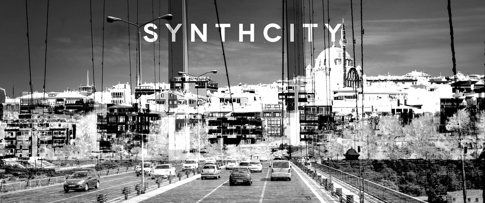
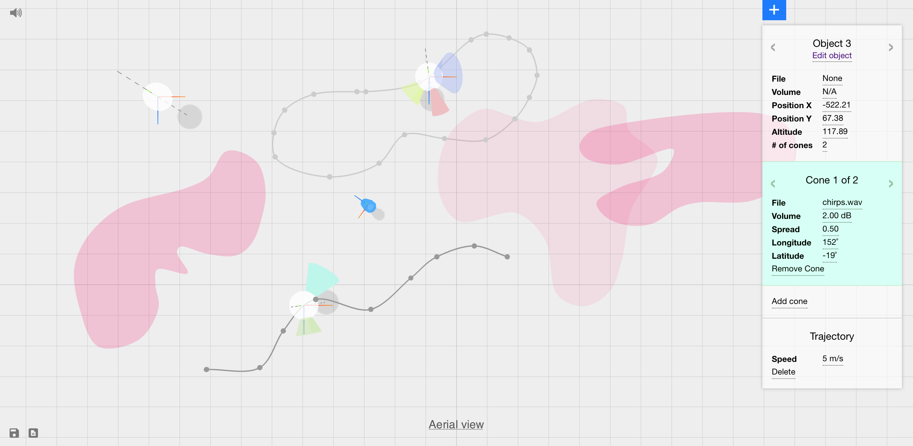

Synthcity [2017]
Synthcity is a generative audiovisual
installation. By computationally blending everyday figures and textures, it
synthesizes extremely unrealistic versions of a city using its real
landscapes, objects, sounds and people. Synthcity was premiered at ISEA
2017 in Manzales, Colombia.

Temas [2016]
Temas is a stochastic audiovisual
performance. The software underlying Temas integrates the artist into a
generative system as a module of analysis. The most recent version of Temas was premiered at the Experimental Sound Studio in Chicago in November 2016.

Vylderness [2019]
Temas is a stochastic audiovisual
performance. The software underlying Temas integrates the artist into a
generative system as a module of analysis. The most recent version of Temas was premiered at the Experimental Sound Studio in Chicago in November 2016.

Inviso [2017]
Synthcity is a generative audiovisual
installation. By computationally blending everyday figures and textures, it
synthesizes extremely unrealistic versions of a city using its real
landscapes, objects, sounds and people. Synthcity was premiered at ISEA
2017 in Manzales, Colombia.